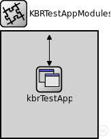
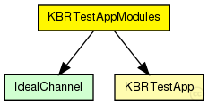
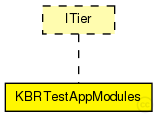

This documentation is released under the Creative Commons license
This documentation is released under the Creative Commons licenseCompound module for a simple test application using the KBR interface
Author: Ingmar Baumgart, Bernhard Heep
The following diagram shows usage relationships between types. Unresolved types are missing from the diagram. Click here to see the full picture.
The following diagram shows inheritance relationships for this type. Unresolved types are missing from the diagram. Click here to see the full picture.
| Name | Value | Description |
|---|---|---|
| display | i=block/segm |
| Name | Direction | Size | Description |
|---|---|---|---|
| udpIn | input |
gate from the UDP layer |
|
| from_lowerTier | input |
gate from the lower tier |
|
| from_upperTier | input |
gate from the upper tier |
|
| trace_in | input |
gate for trace file commands |
|
| tcpIn | input |
gate from the TCP layer |
|
| tcpOut | output |
gate to the TCP layer |
|
| udpOut | output |
gate to the UDP layer |
|
| to_lowerTier | output |
gate to the lower tier |
|
| to_upperTier | output |
gate to the upper tier |
| Name | Type | Default value | Description |
|---|---|---|---|
| kbrTestApp.rpcUdpTimeout | double |
default timeout value for direct RPCs |
|
| kbrTestApp.rpcKeyTimeout | double |
default timeout value for routed RPCs |
|
| kbrTestApp.optimizeTimeouts | bool |
calculate timeouts from measured RTTs and network coordinates |
|
| kbrTestApp.rpcExponentialBackoff | bool |
if true, doubles the timeout for every retransmission |
|
| kbrTestApp.debugOutput | bool |
enable debug output |
|
| kbrTestApp.testMsgInterval | double |
interval for sending test messages |
|
| kbrTestApp.testMsgSize | int |
payload size of the test message in bytes |
|
| kbrTestApp.msgHandleBufSize | int |
how many MsgHandles to store in circular buffer |
|
| kbrTestApp.lookupNodeIds | bool |
lookup only existing nodeIDs |
|
| kbrTestApp.activeNetwInitPhase | bool |
is app active in network init phase? |
|
| kbrTestApp.kbrOneWayTest | bool |
enable sending of one way test messages |
|
| kbrTestApp.kbrRpcTest | bool |
enable sending of RPC test calls |
|
| kbrTestApp.kbrLookupTest | bool |
enable periodic test lookups |
|
| kbrTestApp.failureLatency | double |
this latency is recorded for failed lookups and RPCs |
|
| kbrTestApp.onlyLookupInoffensiveNodes | bool |
if true only search for inoffensive nodes (use together with lookupNodeIds) |
// // Compound module for a simple test application using the KBR interface // // @author Ingmar Baumgart, Bernhard Heep // module KBRTestAppModules like ITier { parameters: @display("i=block/segm"); gates: input udpIn; // gate from the UDP layer input from_lowerTier; // gate from the lower tier input from_upperTier; // gate from the upper tier input trace_in; // gate for trace file commands input tcpIn; // gate from the TCP layer output tcpOut; // gate to the TCP layer output udpOut; // gate to the UDP layer output to_lowerTier; // gate to the lower tier output to_upperTier; // gate to the upper tier submodules: kbrTestApp: KBRTestApp; connections allowunconnected: from_lowerTier --> kbrTestApp.from_lowerTier; to_lowerTier <-- kbrTestApp.to_lowerTier; udpIn --> kbrTestApp.udpIn; udpOut <-- kbrTestApp.udpOut; trace_in --> kbrTestApp.trace_in; }
This documentation is released under the Creative Commons license